공조냉동기계산업기사 (2012-08-26 기출문제)
1과목: 공기조화
1. 어떤 실내공간의 냉방 설계 온습도 조건이 26℃ DB, 50% RH이고, 냉방부하 중 헌열부하 qs = 3000kcal/h, 잠열부하 qL = 1000kcal/h였다면 공급해야 할 송풍량은 약 얼마인가? (단, 냉풍의 취출온도는 16℃, 공기의 정압비열 Cp = 0.24(kcal/kg℃), 공기의 밀도 r = 1.2kg/m3 이다.)
- 694 m3/h
- 1042 m3/h
- 1389 m3/h
- 1426 m3/h
(정답률: 62%)

2. 다음 공식 중 관내 마찰손실 수두를 구하는 식은? (단, d : 관의 안지름, ℓ : 관의 길이, g : 중력가속도 V : 유속, f : 마찰계수, r : 물의 비중량)
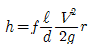
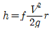
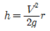
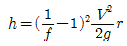
(정답률: 69%)
3. 공기조화 부하 중 실내 취득 열량이 아닌 것은?
- 인체 발생 열량
- 벽체로부터의 열량
- 덕트로부터의 열량
- 기구 발생 열량
(정답률: 79%)
4. 전공기 방식의 특징에 속하는 것은?
- 외기냉방이 가능하다.
- 공조기계실이 적어도 된다.
- 부하가 큰 실에 대해서도 덕트 크기가 작아진다.
- 공기-수 방식에 비해 반송동력이 적게 된다.
(정답률: 71%)
5. 다음 중 냉수코일의 설계법으로 틀린 것은?
- 공기흐름과 냉수흐름의 방향을 평행류로 하고 대수평균 온도차를 적게 한다.
- 코일의 열수는 일반공기 냉각용에는 4 - 8열(列)이 많이 사용된다.
- 냉수 속도는 일반적으로 1m/s 전후로 한다.
- 코일의 설치는 관이 수평으로 놓이게 한다.
(정답률: 81%)
6. 상대습도 50%, 냉방의 헌열부하가 7500 kcal/h, 잠열부하가 2500kcal/h일 때 헌열비(SHF)는 얼마인가?
- 0.25
- 0.65
- 0.75
- 0.85
(정답률: 78%)
7. 지하 주차장 환기설비에서 천장부에 설치되어 있는 고속 노즐로부터 취출되는 공기의 유인효과를 이용하여 오염공기응 국부적으로 희석시키는 방식으로 맞는 것은?
- 제트팬 방식
- 고속덕트 방식
- 무덕트환기 방식
- 디리벤트 방식
(정답률: 61%)
8. 다음은 냉각 코일에서 공기상태변화를 나타낸 것이다. 이때 코일의 BF(BYPASS FACTOR)는 어느 것인가?
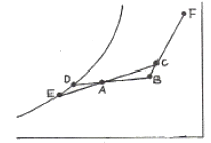
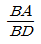
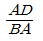
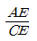
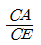
(정답률: 81%)
9. 증기난방 설비를 설계할 때 필요 방열면적(s)의 산출식으로 옳은 것은?
- s = 손실열량 / 650
- s = (650×손실열량) / 539
- s = 손실열량 / 539
- s = 손실열량 / 450
(정답률: 68%)
10. 공기조화 방식의 특징 중 공기-물 방식(유닛병용식)의 특징에 해당하는 것은?
- 유닛의 소음이 발생하지 않는다.
- 유닛 1대로서 1개의 소규모 존을 구성하므로 조닝이 용이하다.
- 덕트가 없으므로 덕트 스페이스가 필요하지 않다.
- 개별식이므로 부분운전 및 시간차 운전에 적합하다.
(정답률: 66%)
11. 기계환기 중 송풍기와 배풍기를 이용하며 대규모 보일러실, 변전실 등에 적용하는 환기법은?
- 1종 환기
- 2종 환기
- 3종 환기
- 4종 환기
(정답률: 79%)
12. 송풍기를 원심, 축류 및 기타로 크게 나눌 때 원심 송풍기의 종류에 속하지 않는 것은?
- 터보 송풍기
- 리밋 로드 송풍기
- 익형 송풍기
- 프로펠러 송풍기
(정답률: 78%)
13. 증기난방에 비해 온수난방에 대한 특징을 설명한 것으로 틀린 것은?
- 난방부하에 따라 열량조절이 용이하다.
- 예열시간이 길지만 가열후에 냉각시간도 길다.
- 수격작용이 심하다.
- 현열을 이용한 난방으로 쾌감도가 높다.
(정답률: 72%)
14. 덕트의 치수 결정법에 대한 설명으로 올바른 것은?
- 등속법은 각 구간마다 압력손실이 같다.
- 등마찰 손실법에서 풍량이 100000 m3/h 이상이 되면 정압재취득법으로 하기도 한다.
- 정압재취즉법은 취출구 직전의 정압이 대략 일정한 값으로 된다.
- 등마찰 손실법에서 각 구간마다 압력손시을 같게 해서는 안된다.
(정답률: 72%)
15. 효과적인 공기조화 설비를 계획하기 위해서는 조닝(Zoning)을 실시한다. 이 때 고려해야 할 요소로 가장 거리가 먼 것은?
- 실의 방위
- 실의 사용시간
- 실의 밝기
- 실의 형태
(정답률: 80%)
16. 다음의 공기선도 상에서 상태점 A의 노점온도는 몇 ℃인가?
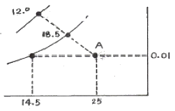
- 12
- 14.5
- 18.5
- 25
(정답률: 76%)
17. 원통다관식 열교환기에 관한 설명으로 맞지 않는 것은?
- 동체 내에 다수의 관을 설치한 형식으로 되어 있다.
- 전열관내 유속은 1.8m/s 이하가 되도록 하는 것이 바람직 하다.
- 전열관은 일반적으로 직경 25.4mm의 동관이 많이 사용된다.
- 동관을 전열관으로 사용할 경우 유체의 온도는 150℃ 이상이 좋다.
(정답률: 77%)
18. 물 또는 온수를 직접 공기 중에 분사하는 방식의 수분무식 가습장치의 종류에 해당되지 않은 것은?
- 원심식
- 초음파식
- 분무식
- 가습팬식
(정답률: 79%)
19. 공조기를 설치한 바닥 면적은 좁고 층고가 높은 경우에 적합한 공조기(AHU)의 형식은?
- 수직형
- 수평형
- 복합형
- 멀티존형
(정답률: 91%)
20. 압축식 냉동기에 비해 흡수식 냉동기 냉각탑의 열처리용량과 냉각수량은 몇 배 정도로 하는가?
- 처리용량 2배, 냉각수량 1.5배
- 처리용량 4배, 냉각수량 2배
- 처리용량 1.5배, 냉각수량 4배
- 처리용량 2배, 냉각수량 4배
(정답률: 66%)
2과목: 냉동공학
21. 헬라이드 토치로 누설검사가 불가능한 냉매는?
- NH3
- R - 504
- R - 22
- R - 114
(정답률: 79%)
22. 고속다기통 압축기의 특성 중 틀린 것은?
- 윤활유의 소비가 많다.
- 능력에 비해 소형이며 가볍다.
- 기통수가 많아 용량제어가 곤란하다.
- 무부하 기동이 가능하다.
(정답률: 75%)
23. 소량의 냉장화물 수송이나 해상수송이 필요할 때에는 냉동 컨테이너를 이용하는 것이 편리하다. 냉동 컨테이너의 냉각방식의 조합으로 적당하지 않은 것은?
- 얼음 : 융해열
- 드라이아이스 : 승화열
- 액체질소 : 증발열
- 기계식 냉동기 : 압축열
(정답률: 73%)
24. 응축온도는 일정한데 증발온도가 저하되었을 때 감소되지 않는 것은?
- 압축비
- 냉동능력
- 성적계수
- 냉동효과
(정답률: 80%)
25. P - V선도에서 1에서 2까지 단열 압축하였을 때의 압축열량은 다음 중 어느 것으로 표현되는가?
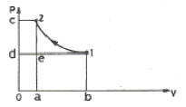
- 면적 1 2 c d 1
- 면적 1 d 0 b 1
- 면적 1 2 a b 1
- 면적 a e d 0 a
(정답률: 86%)
26. 왕복동 압축기의 흡입밸브와 토출밸브의 필요조건으로 틀린 것은?
- 가스가 통과할 때 유동저항이 적을 것
- 밸브가 닫혔을 때 누설이 없을 것
- 밸브의 관성력이 크고 개폐작동이 원활할 것
- 밸브가 파손되거나 고장이 없을 것
(정답률: 80%)
27. 주위와 에너지는 교환할 수 있으나 물질은 교환할 수 없는 계를 열역학에서는 무엇이라 하는가?
- 개방계
- 밀폐계
- 고립계
- 상태계
(정답률: 80%)
28. 브라인에 대한 설명으로 옳은 것은?
- 브라인은 그 감열을 이용하여 냉각한다.
- 염화칼슘 브라인보다 염화나트륨 브라인 쪽이 온도를 더 내릴 수 있다.
- 일반적으로 유기질브라인은 무기질브라인에 비해 부식성이 크다.
- 브라인은 비등점이 낮아도 상관없다.
(정답률: 59%)
29. 냉매 1kg당 냉동량이 300kcal인 어떤 냉동장치가 냉동능력 18RT를 내기 위해 냉매 순환량은 약 얼마이어야 하는가?
- 200kg/h
- 250kg/h
- 300kg/h
- 350kg/h
(정답률: 62%)
30. 냉매의 응축온도 50℃, 응축기 냉각수 입구온도 25℃, 출구온도 35℃일 때 대수평균 온도차는 약 얼마인가?
- 22.6℃
- 19.6℃
- 16.6℃
- 12.6℃
(정답률: 67%)
31. 두께 30cm인 콘크리트벽이 있는데 이 벽의 내면온도가 26℃, 외면온도가 36℃일 때 이 콘크리트 벽을 통하여 흐르는 단위 면적당 열량(kcal/h)은 약 얼마인가? (단, 콘크리트벽의 열전도율은 0.8kcal/mh℃이다.)
- 2.40
- 3.75
- 26.67
- 41.67
(정답률: 44%)
32. 흡수식 냉동기용 흡수제의 구비조건으로 틀린 것은?
- 재생에 많은 열량을 필요로 하지 않을 것
- 점도가 높지 않을 것
- 부식성이 없을 것
- 용액의 증기압이 높을 것
(정답률: 80%)
33. 최근 여름철 주간 전력부하를 야간으로 이전하고 에너지를 효율적으로 사용하자는 측면에서 빙축열시스템이 보급되고 있다. 다음 중 빙축열시스템의 분류에 대한 조합으로 적당하지 않은 것은?
- 정적형 : 관내착빙형
- 정적형 : 캡슐형
- 동적형 : 관외착빙형
- 동적형 : 과냉각아이스형
(정답률: 61%)
34. 냉매의 구비조건이 아닌 것은?
- 응고점이 낮을 것
- 증기의 비열비가 작을 것
- 증발열이 클 것
- 임계온도는 상온보다 낮을 것
(정답률: 62%)
35. 액분리기(Accumulator)의 설명이 잘못된 것은?
- 압축기에 액이 흡입되지 않게 한다.
- 응축기과 압축기 사이에 설치한다.
- 압축기의 파손을 방지한다.
- 장치 기동시 증발기 내에서의 냉배의 교란을 방지한다.
(정답률: 76%)
36. 냉매기 암모니아일 경우는 주로 소형, 프레온일 경우에는 대용량까지 광범위하게 사용되는 응축기로 전열이 양호하고, 설치면적이 적어도 되나 냉각관이 부식되기 쉬운 응축기는?
- 2중관식 응축기
- 입형 쉘 엔드 튜브식 응축기
- 횡형 쉥 엔드 튜브식 응축기
- 7통로식 횡형 쉘 엔드식 응축기
(정답률: 78%)
37. 제빙장치에서 깨끗한 얼음을 만들기 위해 빙관내로 공기를 송입하여 물을 교반시킨다. 이때 어떤 종류의 송풍기가 많이 사용되는가?
- 프로펠러식 송풍기
- 임펠러식 송풍기
- 로터리식 송풍기
- 스크류식 송풍기
(정답률: 60%)
38. 응축기에서 수액기로 액이 떨어지지 않을 때가 있다. 그 대책에 관한 설명 중 옳지 않은 것은?
- 낙하관의 관경을 크게 한다.
- 균압관을 설치한다.
- 낙하관에 트랩을 설치한다.
- 낙하관에 체크밸브를 설치한다.
(정답률: 60%)
39. 스크류(screw) 압축기의 특징을 설명한 것으로 틀린 것은?
- 부품의 수가 적고 수명이 길다.
- 흡입밸브와 토출밸브가 없어 밸브의 마모, 손실이 없다.
- 압축이 연속적이며, 진동이 크다.
- 무단계 용량제어가 가능하며 자동운전에 적합하다.
(정답률: 60%)
40. 냉동능력 9960 kcal/h 인 냉동기에서 냉매를 압축할 때 3.2 kW의 동력이 소모되었다. 응축기 방열량은 몇 kcal/h 인가?
- 11982
- 12012
- 12712
- 13160
(정답률: 66%)
3과목: 배관일반
41. 배수설비의 통기방식 종류가 아닌 것은?
- 회로통기방식
- 일체통기방식
- 각개통기방식
- 신정통기방식
(정답률: 56%)
42. 배관길이 200m, 관경 100mm의 배관 내 20℃의 물을 80℃로 상승시킬 경우 배관의 신축량은? (단, 강관의 선팽창계수는 12.5×10-6mm/m℃ 이다.)
- 10 cm
- 15 cm
- 20 cm
- 25 cm
(정답률: 58%)
43. 복사난방을 바닥패널로 시공할 경우 적당한 가열면의 온도범위는?
- 30 ~ 33℃
- 40 ~ 43℃
- 50 ~ 53℃
- 60 ~ 63℃
(정답률: 68%)
44. 다음 보기에서 설명하는 난방 방식은?
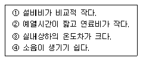
- 지역 난방
- 온수 난방
- 온풍 난방
- 복사 난방
(정답률: 85%)
45. 수액기를 나은 냉매액은 팽창밸브를 통해 교축되어 저온저압의 증발기로 공급된다. 팽창밸브의 종류가 아닌 것은?
- 온도식
- 플로트식
- 인젝터식
- 압력자동식
(정답률: 77%)
46. 급탕의 사용온도가 가장 높은 것은?
- 접시 헹구기용
- 음료용
- 성인 목욕용
- 면도용
(정답률: 78%)
47. 연관의 장점이 아닌 것은?
- 가공성이 좋다.
- 신축성이 풍부하다.
- 중량이 가벼우며 충격에 강하다.
- 산에는 강하지만 알칼리성에는 약하다.
(정답률: 71%)
48. 다음 배관 부속 중 사용 목적이 서로 다른 것과 연결된 것은?
- 플러그 - 캡
- 유니언 - 플랜지
- 니플 - 소켓
- 티 - 리듀셔
(정답률: 83%)
49. 냉동배관 중 액관 시공상 주의할 점을 열거한 것이다. 잘못된 것은?
- 매우 긴 입상 배관의 경우 압력이 증가하게 되므로 충분한 과냉각이 필요하다.
- 배관은 가능한 한 짧게 하여 냉매가 증발하는 것을 방지한다.
- 2대 이상의 증발기를 사용하는 경우 역관에서 발생한 증발가스(flash gas)가 균등하게 분배되도록 배관한다.
- 증발기가 응축기 또는 수액기보다 8m 이상 높은 위치에 설치되는 경우는 약을 충분히 과냉각시켜 액 냉매가 관내에서 증발하는 것을 방지하도록 한다.
(정답률: 62%)
50. 암거내에 증기난방 배관 시공을 하고자 할 때 나관(Barepipe)상태라면 관 표면에 무엇을 바르는가?
- 시멘트
- 석면
- 테프론 테이프
- 콜타르
(정답률: 71%)
51. 증기트랩 중 기계식에 해당되지 않는 것은?
- 벨로즈트랩
- 버킷트랩
- 플로우트트랩
- 다량트랩
(정답률: 49%)
52. 배수관에 트랩을 설치하는 이유는?
- 배수관에서 배수의 역류를 방지한다.
- 배수관의 이물질을 제거한다.
- 배수의 속도를 조절한다.
- 배수관에 발생하는 유취와 유해가스의 역류를 방지한다.
(정답률: 84%)
53. 급탕배관의 시공상 주의 사항이다. 틀린 것은?
- 하향식 공급 방식에서는 급탕관은 끌올림, 복귀관은 끌내림 구배로 한다.
- 급탕관은 보통 아연도금 강관을 사용한다.
- 팽창탱크의 설치높이는 탱크의 저면이 급수원보다 5m 이상 높은 곳에 설치한다.
- 물이 가열되면 공기가 생기므로 공기빼기 밸브를 설치한다.
(정답률: 60%)
54. 증기배관에서 워터해머를 방지하기 위한 방법 중 틀린 것은?
- 보일러에서 프라이밍(priming)이 없도록 한다.
- 감압밸브를 설치하는 것이 좋다.
- 역구배를 충분히 크게 하고 관경을 크게 한다.
- 트랩은 확실하게 작동되고 고장이 없는 것을 사용한다.
(정답률: 70%)
55. 나사용 배관에 사용되는 패킹은?
- 모울드패킹
- 일산화연
- 고무패킹
- 아마존패킹
(정답률: 71%)
56. 배수 설비를 옥내 배수와 옥외 배수로 구분할 때 그 기준은?
- 1.5m 담장
- 건물 외벽
- 건물 외벽에서 밖으로 1m 경계선
- 가옥 부지 경계선
(정답률: 79%)
57. 송풍기의 토출측과 흡입측에 설치하여 송풍기의 진동이 덕튼 장치에 전달되는 것을 방지하기 위한 접속법은?
- 크로스 커넥션(cross connection)
- 캔버스 커넥션(canvas connection)
- 서브 스테이션(sub station)
- 하트포드(hartford) 접속법
(정답률: 83%)
58. 냉동 설비에서 고온 고압의 냉매 기체가 흐르는 배관은?
- 증발기와 압축기 사이 배관
- 응축기와 수액기 사이 배관
- 압축기와 응축기 사이 배관
- 팽창밸브와 증발기 사이 배관
(정답률: 75%)
59. 도시가스 제조 공정에 해당하지 않는 것은?
- 열분해 공정
- 접촉분해 공정
- 압축연소 공정
- 수소화분해 공정
(정답률: 55%)
60. 도시가스 공급시설의 기일시험 및 내압시험압력은 최고사용압력의 몇 배인가?
- 1.5배 , 1.1배
- 1.1배, 2배
- 2배, 1.1배
- 1.1배, 1.5배
(정답률: 61%)
4과목: 전기제어공학
61. 3상 유도전동기가 85%의 부하를 가지고 운전하고 있던 중 1선이 개방되면?
- 즉시 정지한다.
- 역방향으로 회전한다.
- 계속 운전하며 전동기에 큰 지장이 없다.
- 계속 운전하나 결국엔 소손된다.
(정답률: 72%)
62. 그림과 같이 교류의 전압을 직류용 가동코일형 계기를 사용하여 측정하였다. 전압계의 눈금은 몇 [V] 인가? (단, 교류전압의 최대값은 Vm이고, 전압개의내부저항 R의 값은 충분히 크다고 한다.)
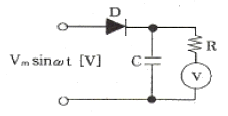
- Vm
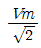
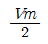
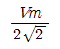
(정답률: 63%)
63. 그림의 신호 흐름선도에서 C/R는?
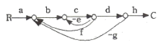
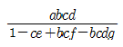
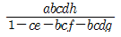
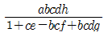
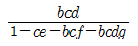
(정답률: 68%)
64. 도선에 흐르는 전류에 의하여 발생되는 지계의 크기는 전류의 크기와 거리에 따라 달라지는 법칙은?
- 암체어의 오른나사 법칙
- 플레밍의 왼손 법칙
- 비오-사바르의 법칙
- 렌츠의 법칙
(정답률: 62%)
65. 전자회로에서 온도 보상용으로 많이 사용되고 있는 소자는?
- 저항
- 코일
- 콘덴서
- 서미스터
(정답률: 83%)
66. 그림은 전동기 속도제어의 한 방법이다. 전동기가 최대 출력을 낼 때 사이리스터의 점호각은 몇 [rad]이 되는가?
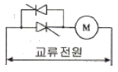
- 0
- π/6
- π/2
- π
(정답률: 65%)
67. 저항 10[Ω]과 정전용량 20[μF]를 직렬로 연결하였을 때, 이 회로의 시정수는 몇 [ms] 인가?
- 0.2
- 0.8
- 1.2
- 1.6
(정답률: 43%)
68. 연료의 유량과 공기의 유량과의 관계 비율을 연소에 적합하게 유지하고자 하는 제어는?
- 프로세스제어
- 비율제어
- 프로그래밍제어
- 시퀀스제어
(정답률: 83%)
69. 다음 ( )안의 ①, ②에 알맞은 것은?
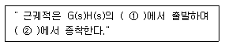
- ①영점 ②극점
- ①극점 ②영점
- ①분지점 ②극점
- ①극점 ② 분지점
(정답률: 76%)
70. 직류전동기의 회전수를 일정하게 유지시키기 위하여 전압제어를 하고 있다. 전압의 크기는 어느 것에 해당하는가?
- 목표값
- 조작량
- 제어량
- 제어대상
(정답률: 51%)
71. 다음 논리회로에서 출령 y의 논리식은?
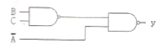
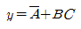
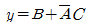
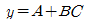
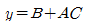
(정답률: 59%)
72. 그림은 인덕턴스회로에서 전압 V와 전류 i의 관계를 설명하고 있다. 그 특징에 대한 설명으로 옳은 것은?
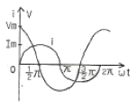
- 전압과 전류는 동일 주파수의 정현파이다.
- 전류가 전압보다 위상이 90° 앞선다.
- 실효치의 비가
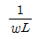
이다. - 콘덴서회로와 같이 다른 주파수의 정현파이다.
(정답률: 60%)
73. 직류전동기의 속도제어방법 중 광범위한 속도제어가 가능하며 운전효율이 좋은 방법은?
- 계자제어
- 직렬저항제어
- 병렬저항제어
- 전압제어
(정답률: 64%)
74. 유도정동기의 속도를 제어하는데 필요한 요소가 아닌 것은?
- 슬립
- 주파수
- 극수
- 리액터
(정답률: 60%)
75.
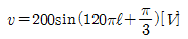
인 전압의 순서값에서 주파수는 몇 Hz 인가?- 50
- 55
- 60
- 65
(정답률: 75%)
76. 그림과 같은 논리회로는?
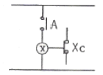
- OR 회로
- AND 회로
- NOT 회로
- NAND 회로
(정답률: 69%)
77. 그림에서 a, b단자에 100V를 인가할 때 저항 2Ω에 흐르는 전류 I1은 몇 A인가?
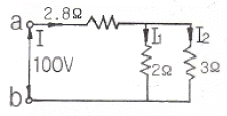
- 10
- 15
- 20
- 25
(정답률: 46%)
78. 바리스터(Varistor)란?
- 비직선적인 전압-전류 특성을 갖는 2단자 반도체소자이다.
- 비직선적인 전압-전류 특성을 갖는 3단자 반도체소자이다.
- 비직선적인 전압-전류 특성을 갖는 4단자 반도체소자이다.
- 비직선적인 전압-전류 특성을 갖는 리액턴스 소자이다.
(정답률: 73%)
79. 되먹임 제어를 바르게 설명한 것은?
- 입력과 출력을 비교하여 정정동작을 하는 방식
- 프로그램으 순서대로 순차적으로 제어하는 방식
- 외부에서 명령을 입력하는데 따라 제어되는 방식
- 미리 정해진 순서에 따라 순차적으로 제어되는 방식
(정답률: 80%)
80. 단위 계단함수 u(t-a)를 라플라스변환 하면?
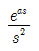
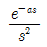
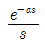
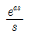
(정답률: 70%)
냉방기가 제공하는 냉방량은 다음과 같다.
q = (qs + qL) / (h1 - h2)
여기서, h1은 공급공기의 엔탈피, h2는 취출공기의 엔탈피이다. 이를 구하기 위해서는 냉방공기의 온도와 상대습도를 이용하여 공기의 열적 상태를 결정해야 한다.
냉방공기의 열적 상태를 결정하기 위해서는 냉방공기의 상대습도를 이용하여 냉방공기의 수증기 압력을 구하고, 이를 이용하여 냉방공기의 엔탈피를 찾아야 한다. 이 과정은 공기의 상태방정식과 수증기 압력식을 이용하여 수행할 수 있다.
여기서는 이러한 과정을 생략하고, 냉방공기의 엔탈피가 23.5kcal/kg이라는 것을 가정하고 계산을 진행한다.
냉방기가 제공하는 냉방량은 다음과 같다.
q = (qs + qL) / (h1 - h2) = (3000 + 1000) / (52.5 - 23.5) = 133.33 kcal/h
따라서, 1시간에 필요한 공기의 양은 다음과 같다.
V = q / (Cp * r * (T1 - T2)) = 133.33 / (0.24 * 1.2 * (26 - 16)) = 1041.67 m3/h
따라서, 정답은 "1042 m3/h"이다.